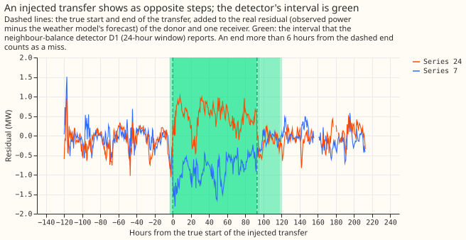
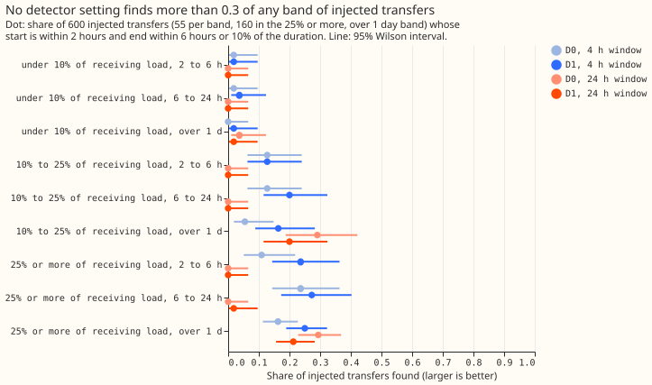

Experiment 43: how well do the two existing LSC detectors find transfers?
We asked how well two simple detectors, built in an earlier experiment, find a transfer of load between two substations when we know it happened. A detector compares the weather model's forecast with the power actually drawn at each of the 16 Primary substations; the difference is the residual. It raises an alarm when the average residual over a window of hours steps up or down. The single-series detector (D0) looks at one substation. The neighbour-balance detector (D1) also requires a neighbour to step the opposite way. We added 600 known transfers to the real power readings, in nine groups by size and length. A detector gets credit for a transfer only if it puts the start within 2 hours of the truth and the end within 6 hours (or 10% of the length). Each detector finds under a fifth of all the transfers and at most 0.29 in any group, and the neighbour check helps only with the 4-hour window.

Headline
Over a 24-hour window the neighbour check finds fewer large transfers than the single-series detector, so the hypothesis is refuted at that window. On the 160 injected transfers that start at 25% to 40% of the receiving load and last over 1 day, the 24-hour D0 finds 47 (0.29) and D1 finds 34 (0.21). D1 minus D0 is -0.081 (95% interval -0.130 to -0.037, resampling whole calendar months). The decision rule names event F1 (recall combined with the alarms' precision), and the F1 difference is -0.055 to -0.049 across the precision bounds; the interval is on recall. Event F1 is 0.36 for D0 and 0.30 to 0.31 for D1.
At the 4-hour window the order reverses. D1 finds 40 (0.25) and D0 finds 26 (0.16), a difference of +0.087 (+0.044 to +0.136), and the F1 difference is +0.07. The decision rule was written for the 24-hour window, so this reversal changes no verdict.
One part of the prediction held and two failed. D1's 24-hour F1 of 0.30 to 0.31 lies in the predicted 0.30 to 0.60, and D0's 0.36 lies in 0.15 to 0.45. D1 does not beat D0 by 0.10, and most misses are not wrong ends: 50% to 71% of the headline transfers get no interval with the right start, and a wrong end explains 13% to 21%.

What the scoreboard measures
- Windows and thresholds: D0 and D1 run with a 4-hour window (8 half-hours) and a 24-hour window (48 half-hours), at the four thresholds fixed in experiment 37 (D0 6.0 and D1 3.75 at 4 hours, D0 4.0 and D1 2.5 at 24 hours). An interval builder from experiment 38 turns each alarm into a start and an end.
- Found: a detector interval on the donor or a receiver with a start within 2 hours of the truth and an end within the larger of 6 hours and 10% of the duration. The end is the interval's final estimate, and a live system learns it only later (see the delay below).
- Event F1: the harmonic mean of the share of injected transfers found and the alarms' precision. Precision comes from the real alarms, not the injections, so it does not depend on how many events we inject.
Precision lies between two bounds because the logs miss real switching. The lower bound is the alarms that fall within 24 hours of a logged closure on their series, over all alarms. The upper bound adds the unmatched alarms times the share of SW2-0b's labelled alarm sample that was visible. That share is a floor on the true share, because the labeller misses some real transfers, and counts of 0 to 4 in 37 are too thin for a point value: the Wilson upper limit for 0 of 37 is about 9%.
| Setting | Alarms | Matching a logged closure | Not matching | Of the sample labelled visible | Precision |
|---|---|---|---|---|---|
| D0, 4 h window | 432 | 202 | 230 | 4 of 37 | 0.47 to 0.53 |
| D1, 4 h window | 444 | 187 | 257 | 2 of 37 | 0.42 to 0.45 |
| D0, 24 h window | 297 | 137 | 160 | 0 of 37 | 0.46 or more |
| D1, 24 h window | 110 | 59 | 51 | 3 of 37 | 0.54 to 0.57 |
Recall by band
All four settings find more transfers that are large and long, and none exceeds 0.29 (47 of 160) in any band. The table gives, for 600 injected transfers (55 per band, 160 in the headline band), the share found, then the share whose start alone was found. A transfer's size band is the share of the receiving load at its start, and the share then drifts between half and twice that.
| Setting | All bands | Start only, all bands | Headline band | Start only, headline | Median end error, starts found |
|---|---|---|---|---|---|
| D0, 4 h window | 0.11 (64 of 600) | 0.16 | 0.16 (26 of 160) | 0.29 | 4.5 h |
| D1, 4 h window | 0.17 (99 of 600) | 0.22 | 0.25 (40 of 160) | 0.39 | 3.5 h |
| D0, 24 h window | 0.11 (65 of 600) | 0.18 | 0.29 (47 of 160) | 0.50 | 5.5 h |
| D1, 24 h window | 0.08 (47 of 600) | 0.13 | 0.21 (34 of 160) | 0.34 | 5.5 h |
D1 finds almost no transfer that has no metered receiver, which explains much of its 24-hour loss. In the headline band 84 of 160 transfers have no metered receiver, because the sheet has no metered second side and the load goes to a substation without power readings. D1 needs an opposite step on a neighbour, so it can fire on those only by coincidence. The 4-hour D0 finds 0 of 84 and D1 5 of 84; the 24-hour D0 finds 12 of 84 and D1 2 of 84. Where a metered receiver exists (76 transfers), the 4-hour D0 finds 26 and D1 35, and the 24-hour D0 finds 35 and D1 32. On those 76 the 24-hour D1 minus D0 is -0.039 (-0.091 to +0.000), and the 4-hour difference is +0.118 (+0.031 to +0.196). The generator gives the headline band this mix because 28% of the real operations' sheets have no metered second side (experiment 41's check) and the drawn transfers over-sample them.
The end of a found transfer is known about a day late. The median time from the true end to the interval's end being known is 19.2 hours (D0, 4 h), 20.0 hours (D1, 4 h), 22.5 hours (D0, 24 h), and 24.0 hours (D1, 24 h). Experiment 38's post hoc variant of the interval builder finds fewer at the 4-hour window (0.05 and 0.08) and about the same at 24 hours (0.11 and 0.07).
Real labelled events
Only 14 labelled real transfers meet the size and length condition, so the real-event result is a count and carries no verdict. The share of the receiving load is recomputed here as the median moved MW over the named metered receivers' usual power in the 28 days before the event, the definition experiment 44 uses, because the stored share is missing for most events. The 14 events (25% or more of the receiving load, over 1 day) are 6 conserved (two substations step in opposite directions) and 8 one-sided (only one substation steps, or a conserved call reclassified because a substation's readings are mostly missing). Found events: the 4-hour D0 finds 0 of 14, the 4-hour D1 2, the 24-hour D0 1, and the 24-hour D1 3 (1 of 6 conserved and 1 of 8 one-sided for the 4-hour D1; 2 of 6 and 1 of 8 for the 24-hour D1). Starts alone are found for 1, 5, 6, and 4 of the 14.
A second set, chosen after seeing that count, is the 35 visible operations lasting over 1 day. Of the 35, the 4-hour D0 finds 1, the 4-hour D1 finds 3, the 24-hour D0 finds 2, and the 24-hour D1 finds 5 (starts alone: 2, 6, 11, and 9). Of the 10 conserved, the 24-hour D1 finds 3 and the 24-hour D0 finds 1. Of the 35, 14 have a share of the receiving load of 25% or more (the one band where the labeller finds 0.83 of injected transfers), 11 have a share under 25%, and 10 have no named metered receiver and so no share. This recall measures a detector against what the labeller could see, not against all real switching.
Limits
- The injected events sit in calm periods. Each has no logged closure within 7 days and no real alarm within 2 days on its series, so recall is optimistic compared with the real alarm mix that sets precision.
- The true partners are always in D1's candidate list. Donors and receivers come from the same static interconnection list that D1 searches, which flatters D1.
- The interval builder reads later data. An interval's pre-level skips stamps inside earlier intervals whose ends are known only afterwards, a mild hindsight effect.
- Event F1 combines two sources. Recall comes from injections and precision from the real alarms, so the F1 depends on the logs missing nothing that the labeller cannot see.
- The residual needs ERA5 weather. ERA5 arrives about 5 days after the event, so the detectors run retrospectively.
Code: ml-experiments/00043-sw2-1-detector-scoreboard/, with every number printed by
e00043_report.py. The reusable harness is e00043_inject.py and the matching rule is
e00043_score.py.